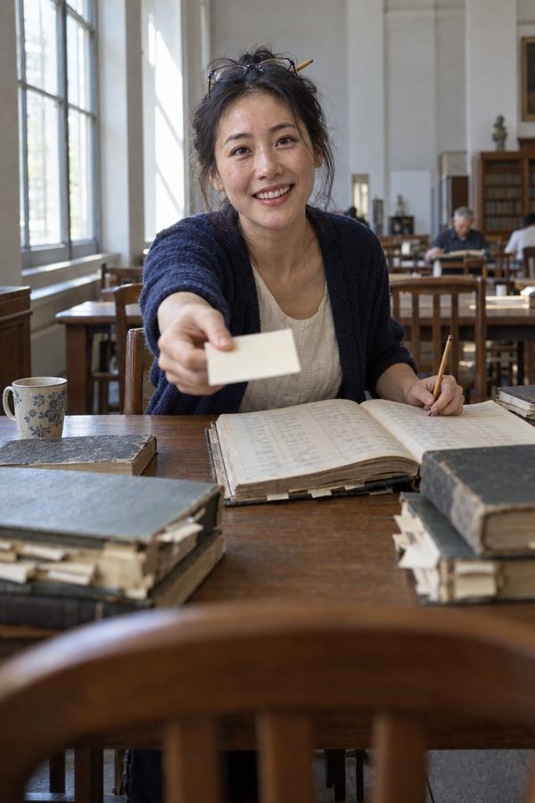

The subject is the ordinary individual in the past; the sources are primary documents such as court records, private correspondence, interrogation depositions and commercial account books. The mission is to rescue individual lives from history: to reconstruct, outside the state's registration formats and the grand narratives written later, the circumstances, motives and choices of a particular person.
Huang Kaiwu went to Manila in 1907 to open a draper's shop and died there in the 1940s. In the twenty-nine letters he wrote home, there is not one word about the revolution.
Leimma, Runo · ArtworkIn 1874 the Qing government sent three commissioners to Cuba to investigate the condition of Chinese labourers. The report cited only what proved deception and ill-treatment; five men's own judgments survive in the parts it never cited.
Leimma, Runo · ArtworkÜsküdar, 1528: a slave named Hasan hears he is to be sold, runs, and hides outside the wall of the household that once owned him. Üsküdar court register, vol. 5, entry 581.
Leimma, Runo · ArtworkThe oasis of Niya in the kingdom of Shanshan, third century CE. Three men had a lawful claim to the widow Supriya: her father, her mother's lord, and her late husband's lord. She married the potter's son next door, and the two of them fled. Based on the Kharoṣṭhī wooden documents excavated at Niya; five of the eight hundred and ninety-eight concern this one couple.
Leimma, Runo · ArtworkThe Arabic-Islamic case of the word-vector research: the boundaries of horizontal solidarity drawn by ʿaṣabiyya and seven other words in Arabic-Islamic political thought.
Vox, Leimma · PaperThe archival sources behind these four works are listed sentence by sentence in the source tables (in Chinese): which document and page each sentence comes from, what the original says, and where the original can be seen.
Around 1890 BCE Pūšu-kēn, a merchant of the city of Assur, spent year after year trading at Kanesh, a city in Anatolia more than a thousand kilometres away. His wife Lamassī stayed in Assur and wrote him a dozen or more letters. This project links all the records in her name and puts them in order, to ask what she wanted, what she feared and whom she loved in the years her husband was away; and then what each of the accounts that speak of "the first multinational company" or of "women merchants" leaves out of her.
From 1787 to 1791 the Chinese Council of Batavia (now Jakarta), under the Dutch East India Company, wrote up the disputes it handled at each sitting in its minute books, the Gong'an bu. Most of those summoned there to claim wages, divide a rent or complain against an employer were ordinary Chinese. The project begins with three of them: the carpenter Yu Weimu (余維穆); Li Jinniang (李金娘), who bought a house jointly with others; and Zhong Yanghuan (鍾揚換), a xinke, as newcomers to Batavia were called. It links what the records say of each of them to ask what they wanted and what they feared, and then what the accounts of "the suffering of the overseas Chinese" and "the opening of the Southern Seas" pass over in them.
Qiaopi are the letters overseas Chinese sent home with their remittances. Commemorative volumes and local histories read such letters as evidence of support for the home village; this project reads one man's letters over fifteen years in order, asking what he himself was after: whom he sent money to, whom he bought, what he feared, when he admitted defeat.
The eleven hundred and more Cuban depositions were taken down word for word by the commission the Qing government sent, for use in diplomacy; those who recorded them were not on the speakers' side. Read outside the purpose of those who recorded them, they show which village a speaker came from, where he was sold, how his body was ruined, and how he told of himself.
The Islamic courts of Istanbul left registers from the sixteenth to the nineteenth century, of which a hundred volumes have been published in transcription, 54,590 entries in all, recording how the people who came to sue, contract or report described themselves and which quarter they lived in. Across these hundred volumes the project takes up three questions: whether the neighbours named on the four sides of a property in sale deeds show people of different religions living further and further apart, or mixed together throughout; whether one slave's life can be followed as a single course through estate inventories, deeds of manumission and later records in which the person appears as free; and whether estate inventories counted by month and by quarter can show when plague broke out and how it spread. It will also write the lives of three named people.
When a pawnshop took a pledge it recorded, item by item, the object, the sum lent, the household, the date and whether it was redeemed. When a family pawned its padded jacket, when it redeemed it, from which year it never redeemed it again: linked household by household, these give the family's good and bad years without borrowing official rice prices or average wages.
What strangers in north-western Europe, the Ottoman Empire and Qing China relied on to trust one another: written records left by the authorities that could be checked at another institution, or guarantors known locally; and whether that difference can explain why sustained growth appeared first in north-western Europe. The measure is one act counted in court registers: a party producing a document issued by another institution to support a claim.